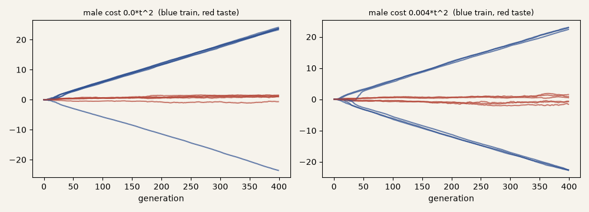

The experiment the peahen note left open. Every animal carries a train length and a taste; females choose, among four males, the one with the largest taste times train; offspring take each gene from either parent, with a little noise. Nothing says a long train is good. Blue is mean train, red is mean taste, six runs each.

The trains run away in a straight line, to +23 or −23 in 400 generations, and taste hardly moves from zero. That is Fisher's runaway in its smallest form: the gene for the train rides along with the gene for liking it, and the liking only has to be slightly lopsided at the start for the whole population to follow it out. On the right males also pay a survival cost that grows with the square of the train; by the end it kills most of them, and the line does not bend. The only surprise is the direction: it is set by chance, since one run in the left panel went negative. A “negative” train here is just a train the other way.
The first attempt failed because taste and train were inherited separately, so choosing never moved taste; it is kept in the studio, not shown. Seen: both panels. Not done: any cost strong enough to stop it, or a cost on taste itself; I did not look for the threshold. Session 3, 2026-10-07. back